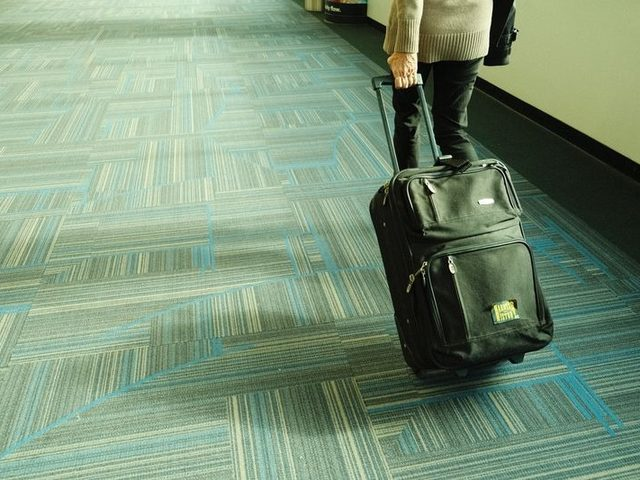
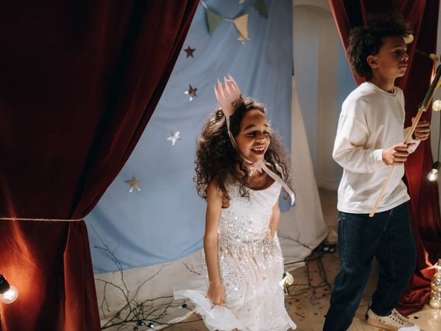
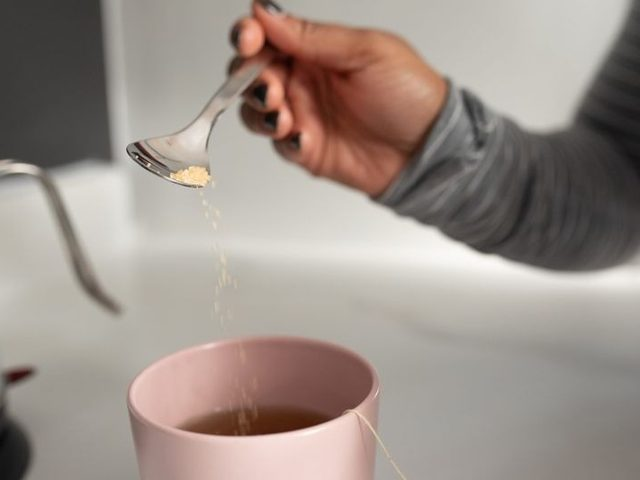
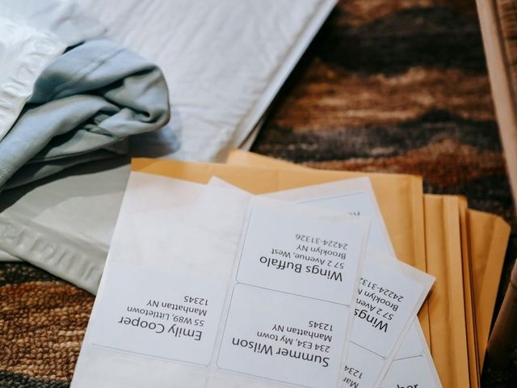
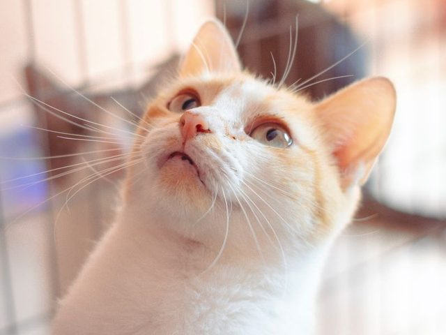
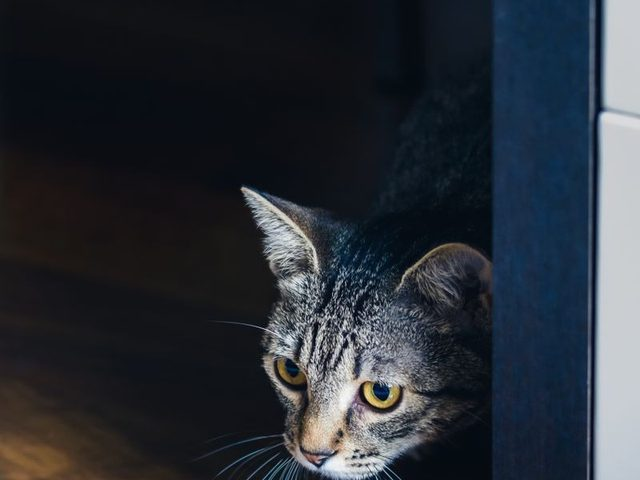
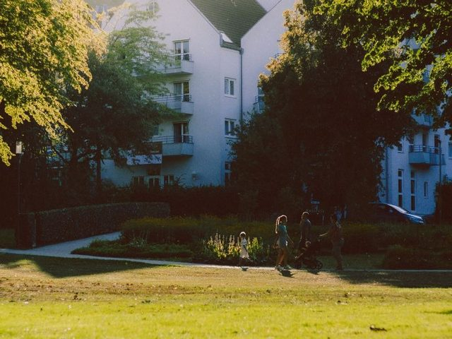
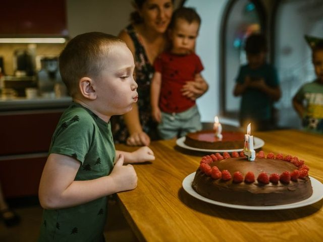
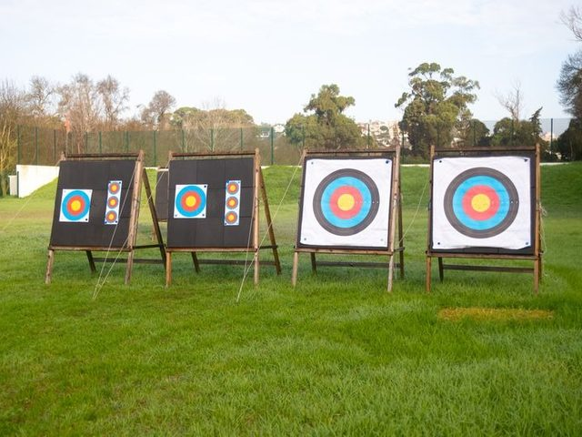

WORD UP「A-I」的 38 個字（A.M. 到 aim）。紅色＝在 WORD UP 還不熟或在這裡答錯的字，先複習紅色的字再做測驗。









| 字 | 詞性 | 例子 |
|---|---|---|
| advice / advise | 名詞 / 動詞 | some advice（不可數）／ advise me to rest |
| actor / actress | 男演員 / 女演員 | a famous actor ／ a famous actress |
| add / addition | 動詞 / 名詞 | add sugar ／ in addition |
| able / ability | 形容詞 / 名詞 | be able to swim ／ the ability to swim |
| 片語 | 中文 |
|---|---|
| be able to + V | 能夠… |
| be absent from | 缺席… |
| be afraid of | 害怕… |
| agree with + 人 | 同意某人 |
| in advance | 事先 |
| go abroad | 出國（不加 to） |